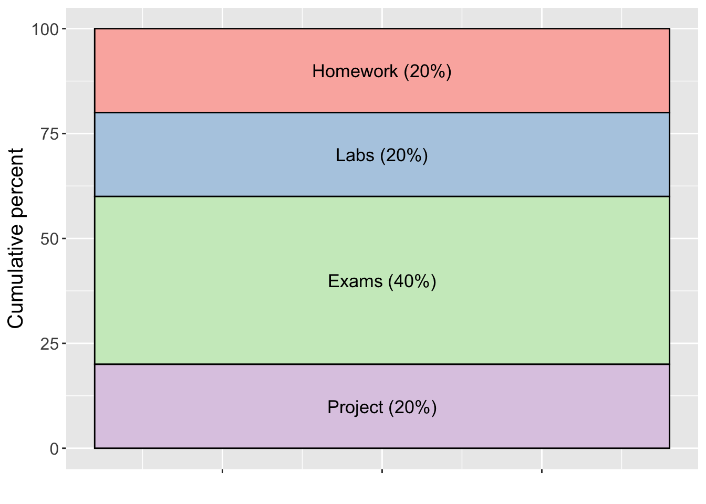

Introduction to statistical packages R and SAS, including data importation, cleaning, graphing, and basic programming. Emphasis on use of graphical displays to explore, understand, and present data, and on organization of code.
At the completion of this course, students will:
TR 12:15-1:30pm
Wilson Hall 1-143
Dr. Stacey Hancock
email: stacey.hancock@montana.edu
Office: Wilson 2-195
Phone: (406) 994-5350
Elijah Meyer
email: elijah.meyer@montana.edu
Office: Wilson 1-xxx
One of: STAT 217, STAT 332, STAT 401, or equivalent.
The process of statistical computing often involves a combination of Google searches, Stack Overflow posts, and various online textbooks, tutorials, and blog posts. As such, there is no one textbook for this course. However, there are a few resources we will consult regularly:
Explore my list of statistical computing resources for an extended list.
In this course, we will be using the statistical software:
In addition, we will use Git and GitHub for version control and group assignments.
For announcements, grades, discussion forums, and turning in individual assignments, see our D2L page.
Your grade in STAT 408 will be comprised of the following components.

Labs (20%): Weekly Thursday labs will have a large computational element and will be designed to be completed in 75 minutes; however, there may be times that labs need to be finished outside of class time. Lab assignments will be turned in as a group in GitHub.
Exams (40%): There will be two midterm exams and one final exam. Each exam will have both an in-class and a take-home component.
Project (20%): A data storytelling project will be completed in groups.
Letter grades generally follow the typical scale:
93-100 = A
90-92 = A-
88-89 = B+
83-87 = B
80-82 = B-
etc.
These cutoffs may be adjusted down (never up!) at the end of the semester, depending on the grade distribution in the course. Thus, a 93% will guarantee an A, a 90% will guarantee an A-, etc.
In STAT 408, at a minimum, any act of academic dishonesty, which includes but is not limited to plagiarism, cheating, multiple submissions, or facilitating others’ misconduct, will result in a score of zero on the assignment/quiz/exam in question and notification of department and university officials. Further action may be taken as warranted. If you have any questions about the limits of collaboration or about using and citing sources, you are expected to ask for clarification.
After attempting to complete homework problems on your own, you are permitted to collaborate on homework in a constructive manner for all involved—each individual in the collaboration needs to ensure they understand and could explain the process of solving each problem. While I encourage you to talk through problems with fellow students, the work you turn in must be your own and must be written in your own words (unless the assignment specifically states otherwise).
Each homework will require a “citations” page where you cite all sources (including web forums such as Stack Overflow) and individuals used to complete that homework assignment. Paraphrasing or quoting another’s work without citing the source is a form of academic dishonesty. Even inadvertent or unintentional misuse or appropriation of another’s work (such as relying heavily on source material that is not expressly acknowledged) is considered plagiarism. Homework assignments that do not cite sources or individuals, or assignments where answers are copied directly from another student, will be considered and treated as plagiarism, and will receive a zero grade. If you have any questions about the limits of collaboration or about using and citing sources, you are expected to ask for clarification.
Students in an academic setting are responsible for approaching all assignments with rigor, integrity, and in compliance with the University Code of Student Conduct. This responsibility includes:
More information about Academic Misconduct from the Dean of Students
Respect for Diversity: It is our intent that students from all diverse backgrounds and perspectives be well-served by this course, that students’ learning needs be addressed both in and out of class, and that the diversity that students bring to this class be viewed as a resource, strength and benefit. It is our intent to present materials and activities that are respectful of diversity: gender identity, sexual orientation, disability, age, socioeconomic status, ethnicity, race, religion, culture, perspective, and other background characteristics. Your suggestions about how to improve the value of diversity in this course are encouraged and appreciated. Please let us know ways to improve the effectiveness of the course for you personally or for other students or student groups.
In addition, in scheduling exams, we have attempted to avoid conflicts with major religious holidays. If, however, we have inadvertently scheduled an exam or major deadline that creates a conflict with your religious observances, please let us know as soon as possible so that we can make other arrangements.
Support for Inclusivity: We support an inclusive learning environment where diversity and individual differences are understood, respected, appreciated, and recognized as a source of strength. We expect that students, faculty, administrators and staff at MSU will respect differences and demonstrate diligence in understanding how other peoples’ perspectives, behaviors, and worldviews may be different from their own.